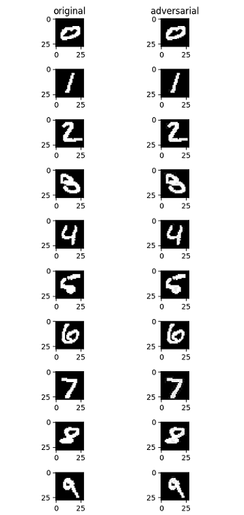

使用NAD算法提升模型安全性¶

概述¶
本教程介绍MindSpore Armour提供的模型安全防护手段，引导您快速使用MindSpore Armour，为您的AI模型提供一定的安全防护能力。
AI算法设计之初普遍未考虑相关的安全威胁，使得AI算法的判断结果容易被恶意攻击者影响，导致AI系统判断失准。攻击者在原始样本处加入人类不易察觉的微小扰动，导致深度学习模型误判，称为对抗样本攻击。MindSpore Armour模型安全提供对抗样本生成、对抗样本检测、模型防御、攻防效果评估等功能，为AI模型安全研究和AI应用安全提供重要支撑。
对抗样本生成模块支持安全工程师快速高效地生成对抗样本，用于攻击AI模型。
对抗样本检测、防御模块支持用户检测过滤对抗样本、增强AI模型对于对抗样本的鲁棒性。
评估模块提供多种指标全面评估对抗样本攻防性能。
这里通过图像分类任务上的对抗性攻防，以攻击算法FGSM和防御算法NAD为例，介绍MindSpore Armour在对抗攻防上的使用方法。
本例面向CPU、GPU、Ascend 910 AI处理器，你可以在这里下载完整的样例代码： https://gitee.com/mindspore/mindarmour/blob/r2.0/examples/model_security/model_defenses/mnist_defense_nad.py
建立被攻击模型¶
以MNIST为示范数据集，自定义的简单模型作为被攻击模型。
引入相关包¶
import os
import numpy as np
from scipy.special import softmax
import mindspore as ms
from mindspore import dataset as ds
import mindspore.dataset.vision as vision
import mindspore.dataset.transforms as transforms
from mindspore.dataset.vision import Inter
import mindspore.nn as nn
from mindspore.nn import SoftmaxCrossEntropyWithLogits
from mindspore.common.initializer import TruncatedNormal
from mindspore.train import Model
from mindarmour.adv_robustness.attacks import FastGradientSignMethod
from mindarmour.utils import LogUtil
from mindarmour.adv_robustness.evaluations import AttackEvaluate
ms.set_context(mode=ms.GRAPH_MODE, device_target="Ascend")
LOGGER = LogUtil.get_instance()
LOGGER.set_level("INFO")
TAG = 'demo'
加载数据集¶
利用MindSpore的dataset提供的MnistDataset接口加载MNIST数据集。
# generate dataset for train of test
def generate_mnist_dataset(data_path, batch_size=32, repeat_size=1,
num_parallel_workers=1, sparse=True):
"""
create dataset for training or testing
"""
# define dataset
ds1 = ds.MnistDataset(data_path)
# define operation parameters
resize_height, resize_width = 32, 32
rescale = 1.0 / 255.0
shift = 0.0
# define map operations
resize_op = vision.Resize((resize_height, resize_width),
interpolation=Inter.LINEAR)
rescale_op = vision.Rescale(rescale, shift)
hwc2chw_op = vision.HWC2CHW()
type_cast_op = transforms.TypeCast(ms.int32)
# apply map operations on images
if not sparse:
one_hot_enco = transforms.OneHot(10)
ds1 = ds1.map(operations=one_hot_enco, input_columns="label",
num_parallel_workers=num_parallel_workers)
type_cast_op = transforms.TypeCast(ms.float32)
ds1 = ds1.map(operations=type_cast_op, input_columns="label",
num_parallel_workers=num_parallel_workers)
ds1 = ds1.map(operations=resize_op, input_columns="image",
num_parallel_workers=num_parallel_workers)
ds1 = ds1.map(operations=rescale_op, input_columns="image",
num_parallel_workers=num_parallel_workers)
ds1 = ds1.map(operations=hwc2chw_op, input_columns="image",
num_parallel_workers=num_parallel_workers)
# apply DatasetOps
buffer_size = 10000
ds1 = ds1.shuffle(buffer_size=buffer_size)
ds1 = ds1.batch(batch_size, drop_remainder=True)
ds1 = ds1.repeat(repeat_size)
return ds1
建立模型¶
这里以LeNet模型为例，您也可以建立训练自己的模型。
定义LeNet模型网络。
def conv(in_channels, out_channels, kernel_size, stride=1, padding=0): weight = weight_variable() return nn.Conv2d(in_channels, out_channels, kernel_size=kernel_size, stride=stride, padding=padding, weight_init=weight, has_bias=False, pad_mode="valid") def fc_with_initialize(input_channels, out_channels): weight = weight_variable() bias = weight_variable() return nn.Dense(input_channels, out_channels, weight, bias) def weight_variable(): return TruncatedNormal(0.02) class LeNet5(nn.Cell): """ Lenet network """ def __init__(self): super(LeNet5, self).__init__() self.conv1 = conv(1, 6, 5) self.conv2 = conv(6, 16, 5) self.fc1 = fc_with_initialize(16*5*5, 120) self.fc2 = fc_with_initialize(120, 84) self.fc3 = fc_with_initialize(84, 10) self.relu = nn.ReLU() self.max_pool2d = nn.MaxPool2d(kernel_size=2, stride=2) self.flatten = nn.Flatten() def construct(self, x): x = self.conv1(x) x = self.relu(x) x = self.max_pool2d(x) x = self.conv2(x) x = self.relu(x) x = self.max_pool2d(x) x = self.flatten(x) x = self.fc1(x) x = self.relu(x) x = self.fc2(x) x = self.relu(x) x = self.fc3(x) return x
训练LeNet模型。利用上面定义的数据加载函数
generate_mnist_dataset载入数据。mnist_path = "../common/dataset/MNIST/" batch_size = 32 # train original model ds_train = generate_mnist_dataset(os.path.join(mnist_path, "train"), batch_size=batch_size, repeat_size=1, sparse=False) net = LeNet5() loss = SoftmaxCrossEntropyWithLogits(sparse=False) opt = nn.Momentum(net.trainable_params(), 0.01, 0.09) model = Model(net, loss, opt, metrics=None) model.train(10, ds_train, callbacks=[ms.LossMonitor()], dataset_sink_mode=False) # 2. get test data ds_test = generate_mnist_dataset(os.path.join(mnist_path, "test"), batch_size=batch_size, repeat_size=1, sparse=False) inputs = [] labels = [] for data in ds_test.create_tuple_iterator(): inputs.append(data[0].asnumpy().astype(np.float32)) labels.append(data[1].asnumpy()) test_inputs = np.concatenate(inputs) test_labels = np.concatenate(labels)
测试模型。
# prediction accuracy before attack net.set_train(False) test_logits = net(ms.Tensor(test_inputs)).asnumpy() tmp = np.argmax(test_logits, axis=1) == np.argmax(test_labels, axis=1) accuracy = np.mean(tmp) LOGGER.info(TAG, 'prediction accuracy before attacking is : %s', accuracy)
测试结果中分类精度达到了98%。
prediction accuracy before attacking is : 0.9895833333333334
对抗性攻击¶
调用MindSpore Armour提供的FGSM接口（FastGradientSignMethod）。
# attacking
# get adv data
attack = FastGradientSignMethod(net, eps=0.3, loss_fn=loss)
adv_data = attack.batch_generate(test_inputs, test_labels)
# get accuracy of adv data on original model
adv_logits = net(ms.Tensor(adv_data)).asnumpy()
adv_proba = softmax(adv_logits, axis=1)
tmp = np.argmax(adv_proba, axis=1) == np.argmax(test_labels, axis=1)
accuracy_adv = np.mean(tmp)
LOGGER.info(TAG, 'prediction accuracy after attacking is : %s', accuracy_adv)
attack_evaluate = AttackEvaluate(test_inputs.transpose(0, 2, 3, 1),
test_labels,
adv_data.transpose(0, 2, 3, 1),
adv_proba)
LOGGER.info(TAG, 'mis-classification rate of adversaries is : %s',
attack_evaluate.mis_classification_rate())
LOGGER.info(TAG, 'The average confidence of adversarial class is : %s',
attack_evaluate.avg_conf_adv_class())
LOGGER.info(TAG, 'The average confidence of true class is : %s',
attack_evaluate.avg_conf_true_class())
LOGGER.info(TAG, 'The average distance (l0, l2, linf) between original '
'samples and adversarial samples are: %s',
attack_evaluate.avg_lp_distance())
LOGGER.info(TAG, 'The average structural similarity between original '
'samples and adversarial samples are: %s',
attack_evaluate.avg_ssim())
攻击结果如下：
prediction accuracy after attacking is : 0.052083
mis-classification rate of adversaries is : 0.947917
The average confidence of adversarial class is : 0.803375
The average confidence of true class is : 0.042139
The average distance (l0, l2, linf) between original samples and adversarial samples are: (1.698870, 0.465888, 0.300000)
The average structural similarity between original samples and adversarial samples are: 0.332538
对模型进行FGSM无目标攻击后，模型精度由98.9%降到5.2%，误分类率高达95%，成功攻击的对抗样本的预测类别的平均置信度（ACAC）为 0.803375，成功攻击的对抗样本的真实类别的平均置信度（ACTC）为 0.042139，同时给出了生成的对抗样本与原始样本的零范数距离、二范数距离和无穷范数距离，平均每个对抗样本与原始样本间的结构相似性为0.332538，平均每生成一张对抗样本所需时间为0.003125s。
攻击前后效果如下图，左侧为原始样本，右侧为FGSM无目标攻击后生成的对抗样本。从视觉角度而言，右侧图片与左侧图片几乎没有明显变化，但是均成功误导了模型，使模型将其误分类为其他非正确类别。

对抗性防御¶
NaturalAdversarialDefense（NAD）是一种简单有效的对抗样本防御方法，使用对抗训练的方式，在模型训练的过程中构建对抗样本，并将对抗样本与原始样本混合，一起训练模型。随着训练次数的增加，模型在训练的过程中提升对于对抗样本的鲁棒性。NAD算法使用FGSM作为攻击算法，构建对抗样本。
防御实现¶
调用MindSpore Armour提供的NAD防御接口（NaturalAdversarialDefense）。
from mindarmour.adv_robustness.defenses import NaturalAdversarialDefense
# defense
net.set_train()
nad = NaturalAdversarialDefense(net, loss_fn=loss, optimizer=opt,
bounds=(0.0, 1.0), eps=0.3)
nad.batch_defense(test_inputs, test_labels, batch_size=32, epochs=10)
# get accuracy of test data on defensed model
net.set_train(False)
test_logits = net(ms.Tensor(test_inputs)).asnumpy()
tmp = np.argmax(test_logits, axis=1) == np.argmax(test_labels, axis=1)
accuracy = np.mean(tmp)
LOGGER.info(TAG, 'accuracy of TEST data on defensed model is : %s', accuracy)
# get accuracy of adv data on defensed model
adv_logits = net(ms.Tensor(adv_data)).asnumpy()
adv_proba = softmax(adv_logits, axis=1)
tmp = np.argmax(adv_proba, axis=1) == np.argmax(test_labels, axis=1)
accuracy_adv = np.mean(tmp)
attack_evaluate = AttackEvaluate(test_inputs.transpose(0, 2, 3, 1),
test_labels,
adv_data.transpose(0, 2, 3, 1),
adv_proba)
LOGGER.info(TAG, 'accuracy of adv data on defensed model is : %s',
np.mean(accuracy_adv))
LOGGER.info(TAG, 'defense mis-classification rate of adversaries is : %s',
attack_evaluate.mis_classification_rate())
LOGGER.info(TAG, 'The average confidence of adversarial class is : %s',
attack_evaluate.avg_conf_adv_class())
LOGGER.info(TAG, 'The average confidence of true class is : %s',
attack_evaluate.avg_conf_true_class())
防御效果¶
accuracy of TEST data on defensed model is : 0.974259
accuracy of adv data on defensed model is : 0.856370
defense mis-classification rate of adversaries is : 0.143629
The average confidence of adversarial class is : 0.616670
The average confidence of true class is : 0.177374
使用NAD进行对抗样本防御后，模型对于对抗样本的误分类率从95%降至14%，模型有效地防御了对抗样本。同时，模型对于原来测试数据集的分类精度达97%。